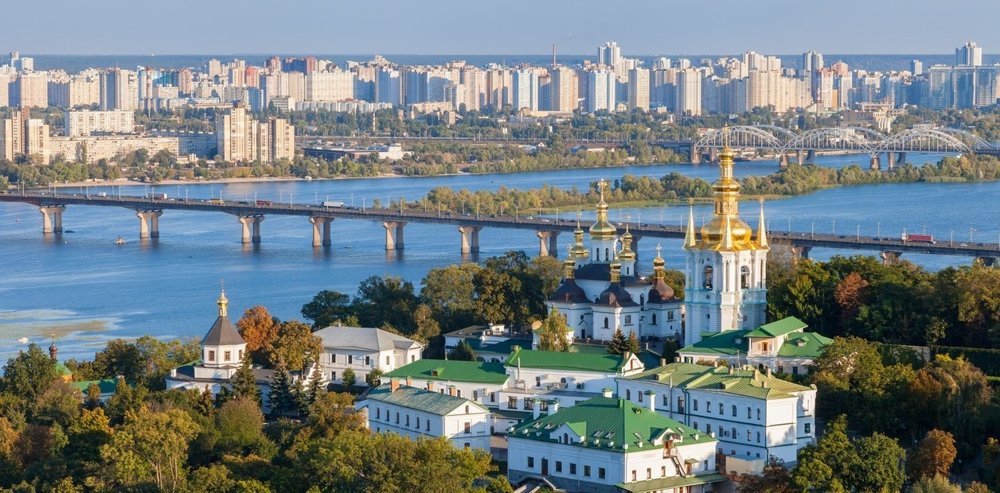
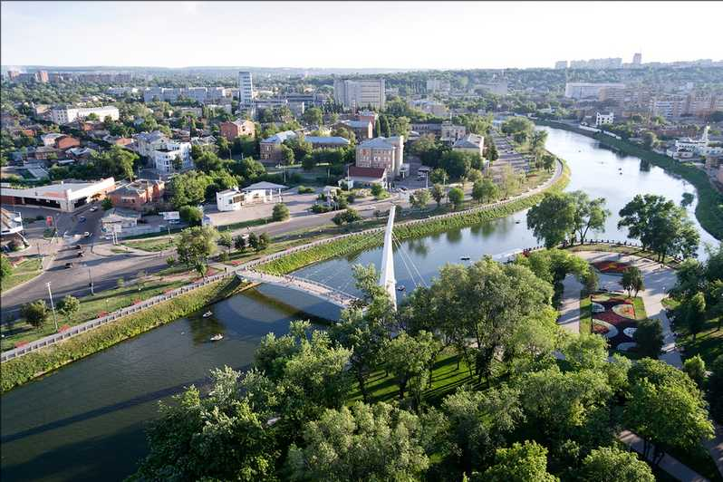
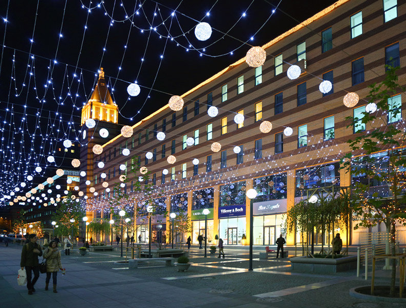
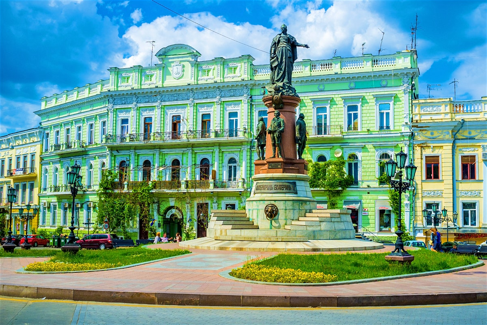
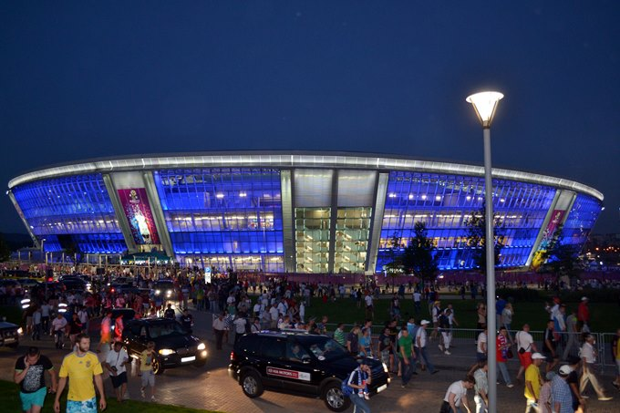
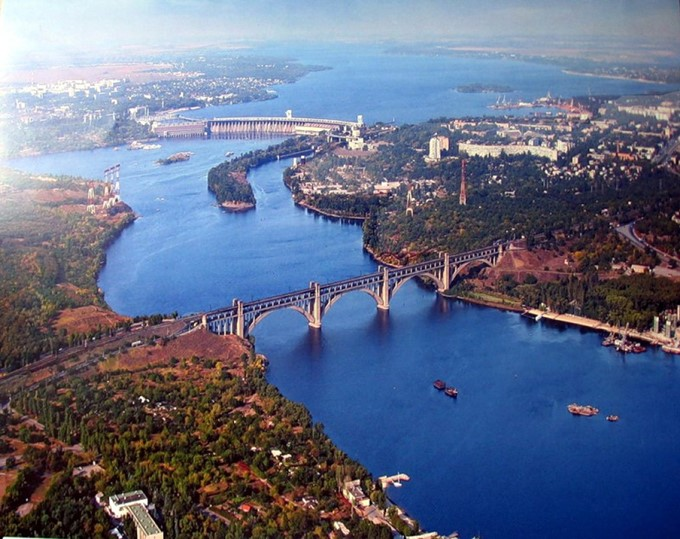
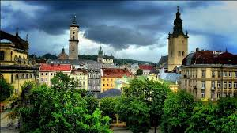
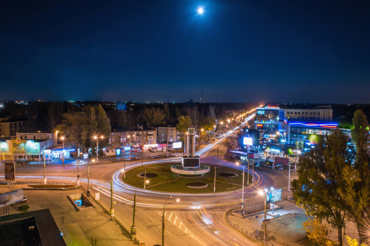

Ciudades mas Importantes de Ucrania
| Ciudad | Descripcion | Imagen |
|---|---|---|
| Kiev | Como no podía ser de otra manera, vamos a comenzar hablando de Kiev, la capital y la ciudad más poblada de Ucrania. Se trata de un importante centro industrial, educativo, científico y cultural de Europa del Este. A pesar de los daños que la Segunda Guerra Mundial provocó en la ciudad, sigue teniendo un rico patrimonio cultural. Además, aquí podrás descubrir el Museo Chernóbil. |  |
| Jarkov | Járkov es la segunda ciudad más grande de Ucrania, además de ser un importante centro industrial cultural y educativo. Eso sí, es importante tener en cuenta que su industria está especializada en producción de armas y maquinaria. Destaca la Plaza de la Libertad, que es la tercera plaza mayor más grande del continente y la séptima más grande del mundo. |  |
| Dnipro | La tercera ciudad más poblada de Ucrania es Dnipropetrovsk. Situada a orillas del río Dniéper, también es un importante centro comercial, industrial y económico del país. Mención aparte merece su desarrollo tecnológico en el sector de la metalurgia de armamento. Además, es importante tener en cuenta que para muchos es una de las ciudades más bellas del país. |  |
| Odesa | Seguimos nuestro recorrido por Ucrania en Odesa, que se encuentra a orillas del Mar Negro. La hospitalidad, las tradiciones, la hermosa arquitectura y sus amplias playas son algunos de sus puntos fuertes. Uno de los lugares más asombrosos de Odesa es la calle Deribasovskaya, en la que artistas contemporáneos muestran sus obras. Muchos denominan a la ciudad como la “Perla del Mar Negro”. |  |
| Donetsk | Otra importante ciudad de Ucrania es Donetsk, que desde 2014 es uno de los principales lugares de combate. Entre sus principales puntos de interés encontramos la copia del monumento Plama de Mertsálov, que se encuentra en una de sus plazas, y un monumento dedicado a un cantante de ópera, que se encuentra frente al Teatro Nacional Académico. Desde abril de 2014 está administrada por la República Popular de Donetsk, un estado con reconocimiento limitado. |  |
| Zaporiyia | También tenemos que hablarte de Zaporiyia, una ciudad de la región centro meridional del país que es un importante centro industrial. Es importante tener en cuenta que también fue un centro de ingeniería en los tiempos soviéticos, lo que acarreó consecuencias medioambientales. Afortunadamente, la calidad del aire ha mejorado. |  |
| Lviv | No podía faltar en la lista Leópolis, también conocida como Lviv. Conocida por su herencia cultural y arquitectónica, alberga numerosos monumentos, teatros, museos, iglesias, cafeterías y restaurantes. Destacan su teatro de ópera, la Torre de Pólvora, el Ayuntamiento, la Catedral Dominicana y el cementerio de Lychakisvskiy. |  |
| Kryvyi Rih | Por último, queremos hablar de Kryvyi Rih, un importante centro administrativo e industrial. De hecho, desde 2016 alberga la industria del acero más importante de la Europa del Este, además de ser un importante centro mundial de la minería y la metalurgia. |
 |